Manual de uso — Escritorio Contable
Guía para quien usa la aplicación por primera vez: un operario contable que maneja muchos clientes, o un monotributista que se maneja solo. Escritorio Contable hace solo los trámites de AFIP y ATM, y además tiene herramientas para pasar PDF y planillas a Excel. No hace falta saber de programación.
1. ¿Qué es y qué problema resuelve?
El problema: en un estudio con muchos clientes se pasan horas entrando a AFIP y a ATM con una clave, después con otra, para hacer siempre los mismos trámites. Y encima hay que pasar a mano resúmenes bancarios y planillas.
Las dos mitades de la aplicación
- Trámites automáticos en AFIP y ATM. Elegís uno o muchos clientes y el trámite. La aplicación abre el navegador, entra con la clave de cada cliente, hace el trámite y guarda lo que baja en una carpeta por cliente. Por ejemplo: facturar, generar un VEP, bajar los datos registrales o las declaraciones juradas, y en ATM las constancias o los apremios.
- Herramientas de oficina. No entran a ninguna página ni piden claves: sacar a Excel las tablas de resúmenes bancarios y de formularios de AFIP y ATM en PDF y Plantillas Excel.
Qué hace sola y qué hacés vos
- La aplicación: entra a la página, completa los formularios, pasa de un cliente al siguiente y descarga los archivos.
- Vos: cargás los clientes y sus claves, elegís a quién y qué hacerle, revisás los resultados y resolvés lo que la página pide a una persona, como el captcha.
La pantalla de inicio
Arriba está la barra con los botones de siempre: AFIP ▾ y ATM ▾ (despliegan sus trámites), Clientes, PDF, Plantillas Excel, Historial y, a la derecha, 📁 (la carpeta de datos) y ⟳ Recargar.
En el centro está el buscador ¿Qué querés hacer?. Escribí lo que buscás y te ofrece:
- Servicios: por ejemplo "ddjj", "iva" o "factura".
- Clientes, por nombre o CUIT (desde 2 letras). Cada uno trae sus botones 🚀 Sesión AFIP, 🚀 Sesión ATM y ✏️ Editar.
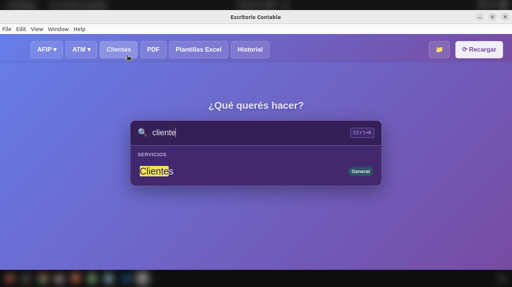
La aplicación arranca en una ventana chica, donde el botón Recargar queda cortado a la derecha.
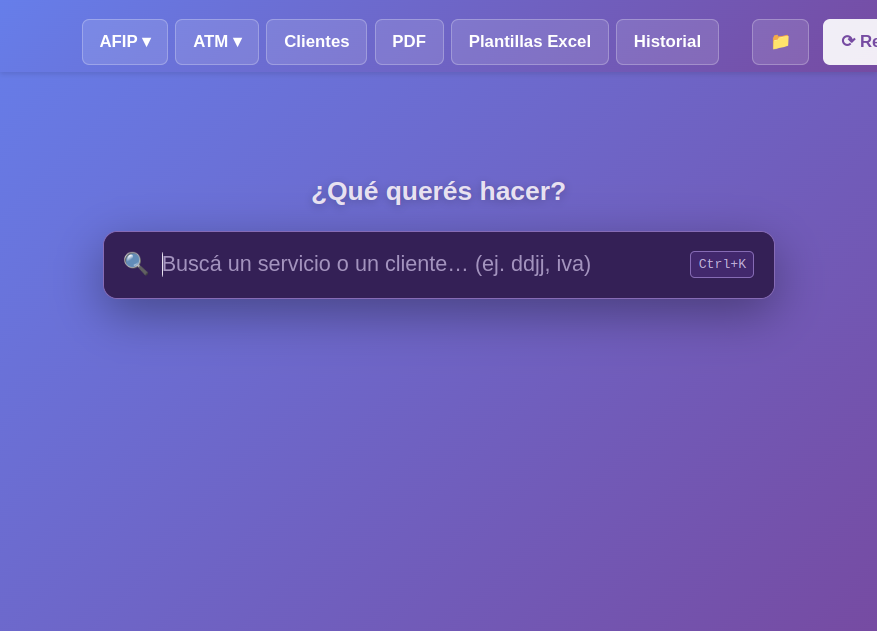
Agrandala o maximizala para verlo todo.
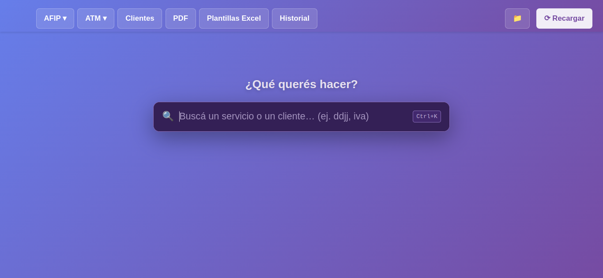
Por dónde empezar
- Leé dónde quedan tus datos (sección 2).
- Cargá un cliente (sección 3) o muchos (sección 6).
- Probá su clave (sección 4).
- Hacé tu primer trámite, sin riesgo: Datos registrales (sección 5).
2. Instalación y dónde quedan tus datos
No se instala
La aplicación es un solo archivo .exe (un
programa portable) y funciona solo en Windows. No
tiene instalador: lo copiás a una carpeta de la compu o a un pendrive y lo
abrís con doble clic.
Necesita Google Chrome o Microsoft Edge en la compu, porque los usa para entrar a AFIP y a ATM. Edge ya viene con Windows, así que casi siempre está. Si no encuentra ninguno, avisa: "Instala Google Chrome o Microsoft Edge para usar esta aplicación."
La primera vez: "Windows protegió su PC"
La primera vez que lo abrís, Windows puede mostrar un cartel azul que dice Windows protegió su PC. Aparece con los programas que no tienen firma digital de una empresa; no quiere decir que tenga un virus.
- Hacé clic en Más información.
- Aparece el botón Ejecutar de todas formas: hacé clic.
Desde ahí el programa abre normalmente.
Tus datos: la carpeta gestor_afip_atm_datos
La primera vez que abrís el programa, se crea sola una carpeta
gestor_afip_atm_datos al lado del .exe.
Ahí se guarda todo lo que cargás: los clientes con sus claves, los estudios,
el historial y los registros de lo que hizo el programa (logs).
Si tenés el programa en un pendrive, los datos viajan con él: lo enchufás en otra compu y están todos tus clientes.
Tus archivos descargados: otra carpeta
Los PDF y Excel que baja cada servicio no van a la carpeta de
datos. Van a la carpeta Descargas de la compu donde estás
trabajando, dentro de gestor_afip_atm, con una carpeta por
cliente. Por ejemplo:
Descargas\gestor_afip_atm\20123456789_Rivadavia_Bernardino\archivos_afip\
gestor_afip_atm_datos(al lado del programa): lo que cargás vos. Es lo que hay que cuidar.Descargas\gestor_afip_atm(en la compu): lo que baja la aplicación. Si trabajás desde un pendrive, estos archivos quedan en la compu, no en el pendrive.
Ver o cambiar la carpeta de datos
En la barra de arriba, a la derecha, está el botón 📁 (Carpeta de datos). Abre una ventana que muestra dónde están tus datos; normalmente dice Al lado del programa.
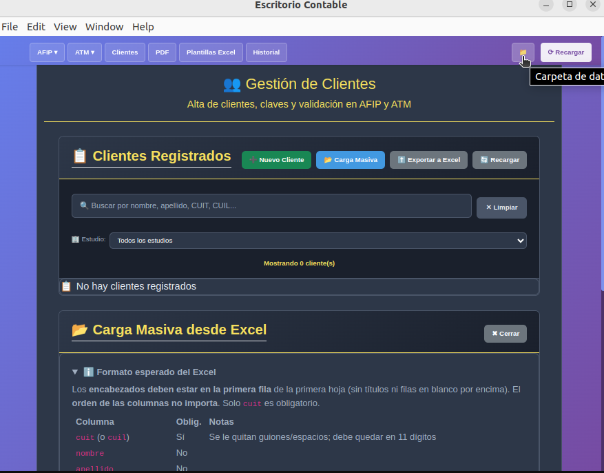
- 📂 Abrir carpeta: abre la carpeta de datos en Windows.
- 📄 Abrir logs: abre los registros, un archivo por día. Sirven si algo falla y alguien te pide "mandame el log".
- Cambiar carpeta…: para guardar los datos en otro lugar, por ejemplo una carpeta tuya en el disco.
- Por defecto: vuelve a guardarlos al lado del programa.
Después de Cambiar carpeta… o Por defecto aparece ✅ Guardado. Hay que reiniciar para que el programa lea la carpeta nueva. Hacé clic en Reiniciar ahora.
Copia de respaldo
Hay dos formas, y conviene hacer alguna de vez en cuando:
- Copiar la carpeta
gestor_afip_atm_datosentera a otro lado (otro pendrive, otro disco). - Exportar los clientes a Excel con ⬆️ Exportar a Excel (sección 8).
.exe y dejá la carpeta gestor_afip_atm_datos donde
está, al lado. El programa nuevo la encuentra y sigue con tus clientes.3. Cargar el primer cliente
Antes de usar cualquier servicio, la aplicación tiene que conocer a tus clientes: su CUIT y sus claves. Esta sección explica cómo cargar uno a mano.
Paso 1. Entrar a Clientes
Hacé clic en el botón Clientes del menú de arriba. También podés escribir "clientes" en el buscador de la pantalla de inicio.
La primera vez la lista está vacía y dice No hay clientes registrados.
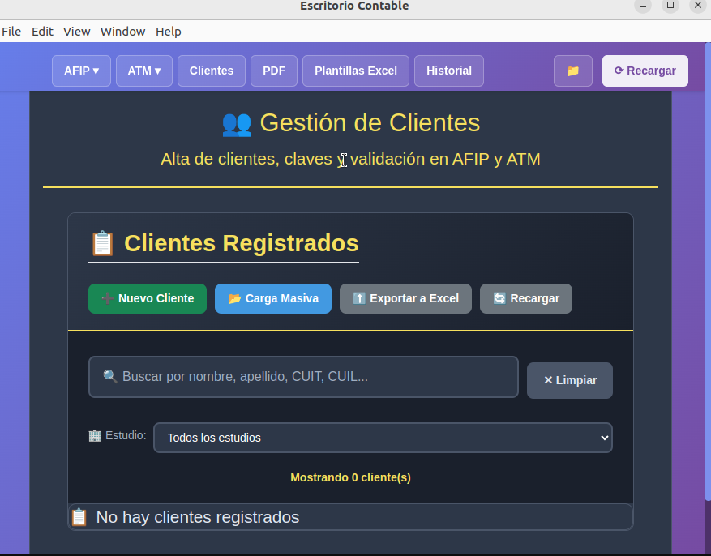
Paso 2. Abrir el formulario
Hacé clic en el botón verde Nuevo Cliente. Se abre un formulario dividido en cuatro bloques.
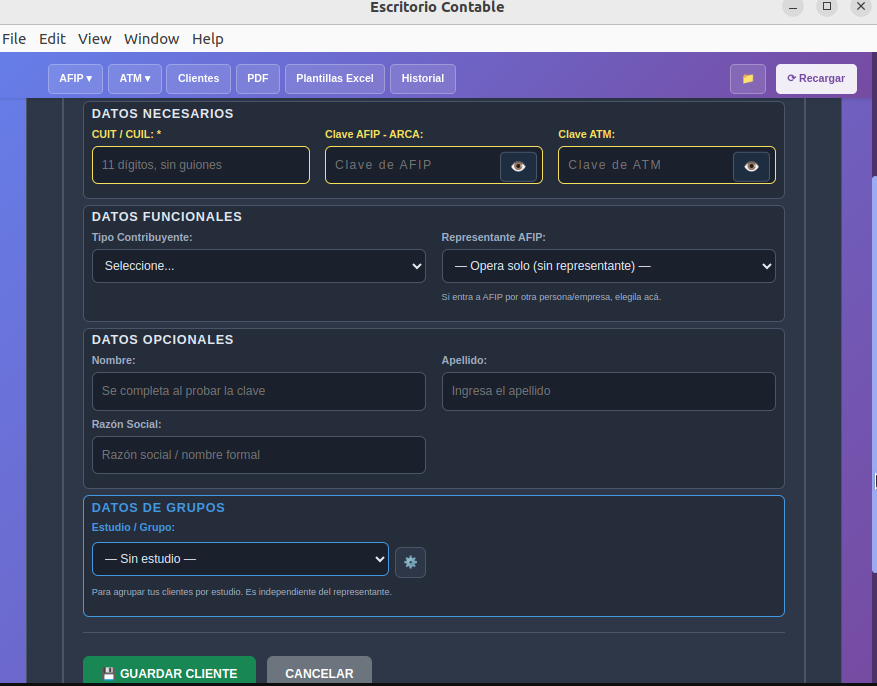
Paso 3. Completar los datos
Datos necesarios
- CUIT / CUIL (obligatorio): los 11 números, sin guiones ni espacios.
- Clave AFIP - ARCA: la clave fiscal del cliente.
- Clave ATM: la clave de Rentas Mendoza, si la vas a usar.
El botón del ojo, al lado de cada clave, sirve para ver lo que escribiste y revisar que no haya errores de tipeo.
Datos funcionales
- Tipo Contribuyente: solo se usa para facturar. Si no vas a facturar con este cliente, dejalo sin elegir. Si vas a facturar: C si es monotributista, B si es responsable inscripto en IVA. Al analizar el cliente (sección 7), la aplicación lo toma de AFIP y lo corrige sola.
- Representante AFIP: dejalo en "Opera solo" si el cliente entra a AFIP con su propia clave. Más abajo se explica el otro caso.
Datos opcionales
Nombre, apellido y razón social. No hace falta escribirlos: el nombre se completa solo cuando la aplicación prueba la clave y lo lee de AFIP.
Datos de grupos
Si trabajás con varios estudios, acá elegís a cuál pertenece el cliente. Para empezar, dejalo en "Sin estudio". Cómo se arman los estudios y para qué sirven está en la sección 8.
Clave propia o representado por otro
Hay dos tipos de clientes:
- Con clave propia: entra a AFIP con su CUIT y su clave. Es el caso más común y el de un monotributista.
- Representado: no usa su clave, sino que entra a AFIP a través de otra persona o empresa que lo representa. En ese caso elegís al representante en la lista y el campo de clave AFIP se bloquea solo, porque no hace falta.
Paso 4. Guardar
Hacé clic en Guardar Cliente. Pueden pasar dos cosas:
- Si no cargaste ninguna clave, el cliente se guarda y aparece en la lista enseguida.
- Si cargaste alguna clave, la aplicación la prueba en el momento: entra a AFIP o ATM y lee el nombre del titular. Esto tarda un poco, porque hace un ingreso real. Al terminar te avisa si la clave anduvo o no. Lo que significa cada resultado está en la sección 4.
Si algo no te deja guardar
- "Debes ingresar el CUIT / CUIL": el CUIT está vacío.
- "El CUIT / CUIL debe tener exactamente 11 números": sobran o faltan números, o hay letras o guiones.
4. Validar las credenciales
Validar es comprobar que la clave de cada cliente realmente entra a AFIP o a ATM. La aplicación lo hace sola: abre el navegador, ingresa con la clave y anota el resultado. Si la clave está mal, te enterás ahora y no a la mitad de un trámite.
Cómo leer la lista
Cada cliente es una fila. A la derecha tiene dos líneas, AFIP y ATM, cada una con una etiqueta de color que dice cómo está esa clave.
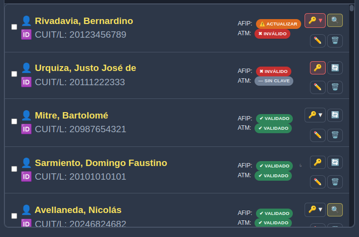
| Etiqueta | Qué significa | Qué hacer |
|---|---|---|
| ⌛ Pendiente | La clave está cargada pero todavía no se probó. | Probarla con el botón de la llave. |
| ✔ Validado | La clave entró bien. | Nada, está lista para usar. |
| ✖ Inválido | AFIP o ATM rechazó la clave. | Pedirle la clave correcta al cliente y corregirla con el lápiz. |
| ⚠️ Actualizar | La clave entra, pero AFIP o ATM pide cambiarla. | Cambiarla en la página oficial y cargar la nueva con el lápiz. |
| 🧩 No verificado | No se pudo comprobar, por ejemplo porque AFIP mostró un captcha o tardó demasiado. No quiere decir que la clave esté mal. | Volver a probar más tarde. |
| — sin clave | No hay clave cargada para ese servicio. | Nada, salvo que vayas a usar ese servicio con este cliente. |
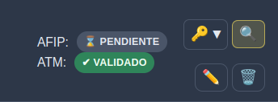
Si al lado del estado de AFIP aparece una flechita ↳, el cliente es representado: el estado que ves es el de la clave de su representante.
Los botones de cada fila
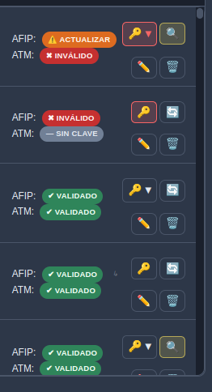
- 🔑 Probar: prueba la clave. Si el cliente tiene clave AFIP y ATM, el botón dice 🔑 ▾: con un clic prueba las dos, y si pasás el mouse por encima podés elegir una sola. Si la clave AFIP está mal, el botón se pone rojo.
- ✏️ (Editar cliente): abre los datos del cliente para corregir una clave. Cuando cambiás una clave, su estado vuelve a Pendiente.
- 🗑️ (Eliminar cliente): elimina al cliente de la lista.
- 🔍 Analizar y 🔄 Refrescar: traen las empresas y los puntos de venta del cliente. Se explican en la sección 7.
Probar varios clientes a la vez
- Tildá la casilla a la izquierda de cada cliente, o usá ☑️ Seleccionar todos.
- Hacé clic en 🔑 Probar seleccionadas. Si pasás el mouse por encima, podés elegir probar solo AFIP o solo ATM.
- La aplicación los prueba uno por uno y va actualizando las etiquetas.
El interruptor Mostrar navegador decide si ves el navegador mientras trabaja.
5. Primer servicio: Datos registrales
El problema: necesitás el PDF "Reflejo de datos registrados" de Sistema Registral de uno o varios clientes, sin entrar a AFIP a mano con cada clave.
Es un buen servicio para empezar: solo lee, no presenta ni modifica nada en AFIP. Si algo sale mal, no hay nada que deshacer.
Paso 1. Entrar a Datos registrales
En el menú de arriba, abrí AFIP ▾ y elegí Datos registrales. También podés escribir "datos registrales" o "constancia" en el buscador de la pantalla de inicio.
Paso 2. Elegir los clientes
En 🔍 BUSCAR CLIENTES escribí parte del nombre o del CUIT, y hacé clic en cada cliente de la lista 📋 CLIENTES. Los que elegís pasan abajo, a ✓ SELECCIONADOS. Si te equivocaste, sacalo de ahí o usá ✕ Limpiar seleccionados.
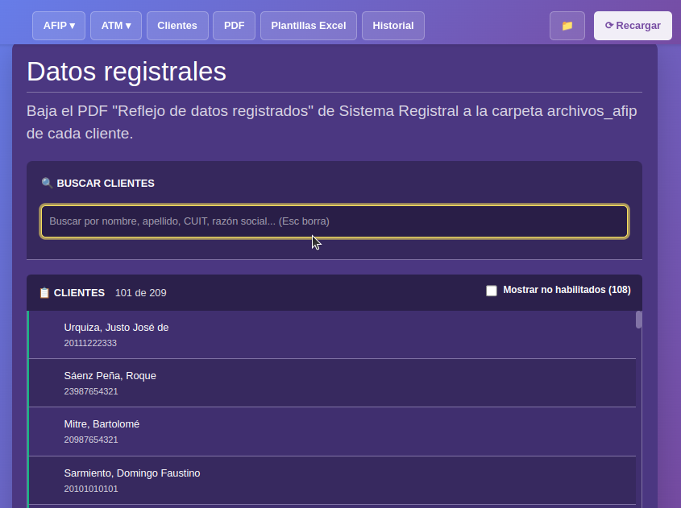
La lista muestra solo los clientes que pueden entrar a AFIP: con su clave o con la de su representante. Para ver también los demás, tildá Mostrar no habilitados.
- Un cliente con la clave todavía sin probar se puede elegir: usarlo la prueba.
- Un cliente con la clave marcada como incorrecta no se puede elegir, porque fallaría seguro. Primero corregí la clave (ver la sección 4).
Paso 3. Descargar
- Dejá tildado Mostrar navegador, así ves lo que hace.
- Hacé clic en Descargar datos registrales.
- Aparece un aviso con la lista de clientes elegidos. Revisala y hacé clic en Iniciar.
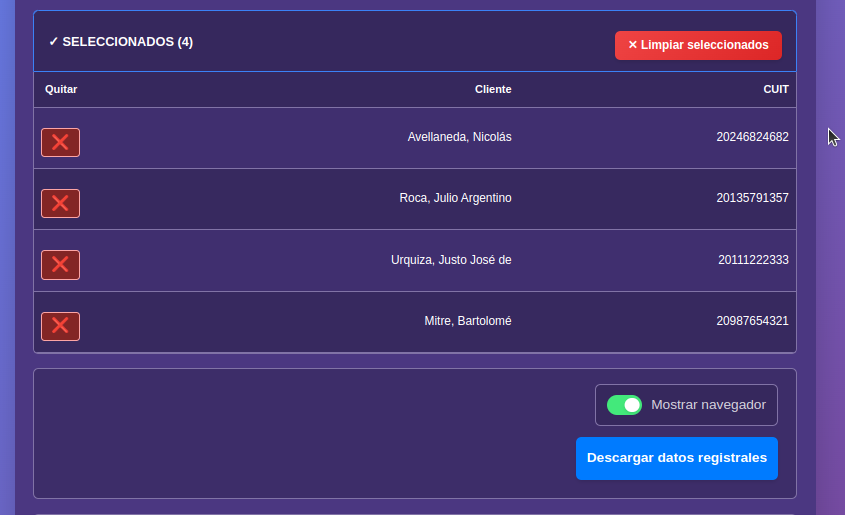
Mientras trabaja, el botón cambia a Cancelar (los primeros segundos no responde, para que un doble clic no corte todo). Si lo apretás, deja de trabajar: el cliente que estaba haciendo y los que faltaban quedan como cancelados. Los PDF que ya bajó quedan guardados.
Qué vas a ver
Se abre el navegador y, para cada cliente:
- Entra a AFIP con la clave.
- Busca Sistema registral y lo abre en una pestaña nueva.
- Elige al cliente, va a Datos registrales y exporta el PDF.
- Cierra esa pestaña y sigue con el próximo.
Tené paciencia: la consulta de AFIP es lenta. En la app, la parte de Resultados va mostrando cada cliente:
- ⏳: lo está haciendo.
- ✓: listo, se descargó el PDF.
- ✗: no se pudo; al lado dice por qué.
- ⏹: cancelado.
Al final dice, por ejemplo, "Terminado: 3 descargado(s), 0 con error."
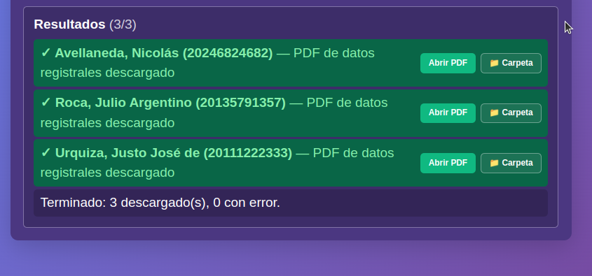
Dónde queda el PDF
En cada cliente que salió bien aparecen dos botones: Abrir PDF y 📁 Carpeta.
El archivo se guarda dentro de tu carpeta de Descargas, en una carpeta por cliente:
Descargas / gestor_afip_atm / CUIT_Nombre / archivos_afip /
y se llama, por ejemplo, 20123456789_DatosRegistrales_2026-11-20.pdf:
CUIT, servicio y fecha del día.
6. Carga masiva de clientes desde Excel
El problema: tenés decenas o cientos de clientes y cargarlos de a uno con Nuevo Cliente lleva horas. Con la carga masiva armás una planilla de Excel y la aplicación los da de alta a todos juntos.
Paso 1. Abrir la carga masiva
En Clientes, hacé clic en el botón celeste 📂 Carga Masiva. Se abre el recuadro 📂 Carga Masiva desde Excel.
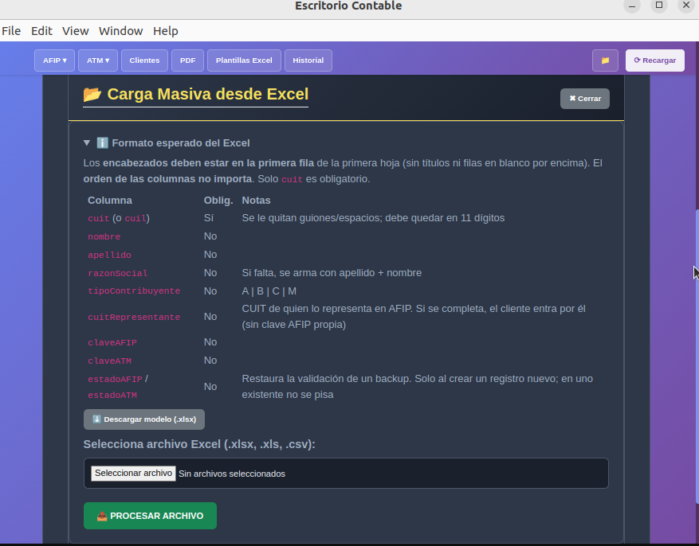
Paso 2. Armar la planilla
Lo más fácil es partir del modelo: abrí ℹ️ Formato esperado del
Excel y hacé clic en ⬇️ Descargar modelo (.xlsx).
Te pregunta dónde guardarlo y baja un archivo
modelo_carga_clientes.xlsx con las columnas listas.
Reglas de la planilla:
- Los encabezados van en la primera fila de la primera hoja, sin títulos ni filas en blanco arriba.
- El orden de las columnas no importa.
- Solo el cuit es obligatorio. Puede ir con guiones o espacios: la aplicación los saca, pero tiene que quedar en 11 números.
- Se aceptan archivos .xlsx, .xls y .csv.
| Columna | Qué va |
|---|---|
| Datos necesarios | |
cuit | El CUIT o CUIL del cliente. Obligatorio. |
claveAFIP | La clave fiscal. Opcional, pero sin ella (ni representante) el cliente no puede usar los servicios de AFIP. |
claveATM | La clave de Rentas Mendoza. Opcional: solo si vas a usar ATM. |
| Datos funcionales | |
tipoContribuyente | Solo se usa para facturar: podés dejarlo vacío. Si lo completás, C si es monotributista, B si es responsable inscripto. Al analizar el cliente, la aplicación lo toma de AFIP y lo corrige sola. |
cuitRepresentante | Opcional. El CUIT de quien lo representa en AFIP. Si lo completás, el cliente entra a AFIP por su representante y no necesita clave AFIP propia. |
| Datos opcionales | |
nombre, apellido | Si no los ponés, el nombre se completa solo al probar la clave. |
razonSocial | Si falta, se arma con apellido y nombre. |
| Datos de grupos | |
estudio | Opcional. El nombre del estudio al que pertenece. Si ese estudio no existe, se crea solo. Vacío = sin estudio. |
Paso 3. Subir el archivo
- En Selecciona archivo Excel, hacé clic en el botón para elegir el archivo y buscá tu planilla.
- Hacé clic en 📤 Procesar Archivo. Mientras trabaja dice Procesando....
Al terminar muestra un resumen, por ejemplo:
"✅ Proceso terminado: Leídos: 50, Creados: 48, Actualizados: 2, Con error: 0."
- Leídos: cuántas filas tenía la planilla.
- Creados: clientes nuevos.
- Actualizados: clientes que ya estaban y a los que se les completó algún dato.
- Sin cambios: clientes que ya estaban con todo cargado (aparece solo si hay alguno).
- Con error: filas que no se pudieron cargar. Si hay, el resumen empieza con ⚠️ y abajo dice cuáles son y por qué, por ejemplo "CUIT/CUIL inválido". Corregilas en la planilla y volvé a subirla.
Qué pasa con los clientes que ya existían
La aplicación reconoce a cada cliente por su CUIT. Si ya lo tenías cargado, solo completa los datos que estaban vacíos. Nunca cambia un dato que ya tenía: ni el nombre, ni una clave, ni si la clave estaba validada.
Paso 4. Probar las claves
Si la planilla traía claves, debajo del resumen aparece el botón 🔐 Verificar credenciales de usuarios cargados. Hace lo mismo que 🔑 Probar seleccionadas, pero solo con los clientes que acabás de cargar. Pide confirmar con Sí, verificar y los prueba uno por uno, igual que en la sección 4.
Si vas a facturar con estos clientes, falta un paso más: analizarlos. Es la sección 7, y de paso también prueba las claves.
7. Analizar cada cliente
El problema: para facturar, la aplicación necesita conocer los puntos de venta de cada cliente y las empresas que maneja cada clave en AFIP. Analizar entra a AFIP y los trae.
¿Hace falta analizar a todos?
No. Analizar solo hace falta para los servicios que usan puntos de venta: facturación, Factura Tipificada, Facturar desde Excel, Consulta de comprobantes y Mercado Pago. Para el resto, como Datos registrales, alcanza con la clave.
Además, analizar prueba la clave de paso: si vas a analizar, no hace falta probar las claves antes (sección 4). Y toma de AFIP el tipo de contribuyente, corrigiendo el que estaba cargado.
Analizar un cliente
En la lista de Clientes, cada cliente con acceso a AFIP tiene en su fila el botón 🔍 Analizar. Al hacer clic aparece el cartel "🔍 Analizando cliente" y, al terminar, un aviso como "✅ Nombre del cliente: 2 punto(s) de venta."
Una vez analizado, ese botón cambia a 🔄 Refrescar: sirve para volver a traer los datos si el cliente dio de alta un punto de venta nuevo.
Analizar varios a la vez
- Arriba de la lista está el botón 🔍 Analizar pendientes, con la cantidad de clientes que faltan analizar entre paréntesis.
- Si tildás algunos clientes, el botón cambia a 🔍 Analizar seleccionados y trabaja solo con esos. Si no tildás ninguno, analiza todos los pendientes de la lista.
- Confirmá con Sí, analizar.
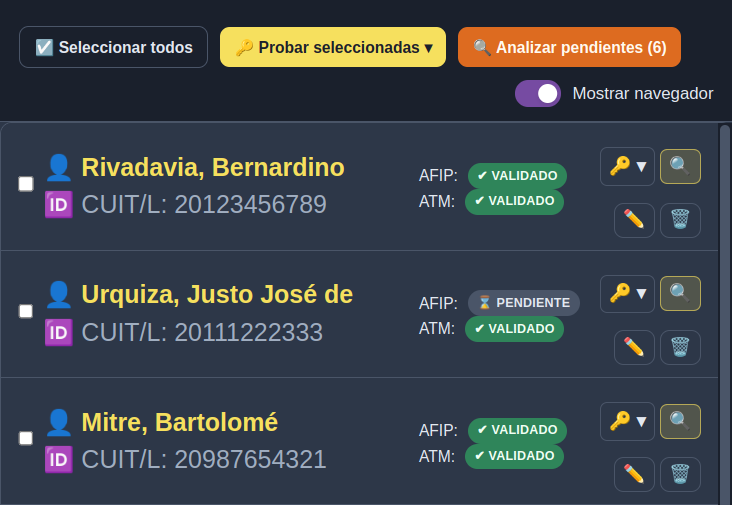
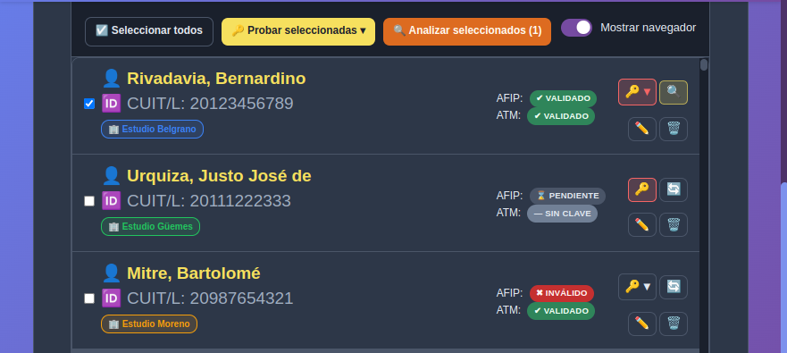
Mientras trabaja aparece el cartel "🔍 Analizando N clientes" con una barra de avance y la cuenta de ✅ y ❌. Al final, un resumen que empieza con "Lote terminado:" dice cuántos ingresos salieron bien y cuáles fallaron.
Los clientes con la clave marcada como ✖ Inválido o ⚠️ Actualizar no entran en el análisis: primero hay que corregir la clave.
Cuánto tarda
Depende de cuántas claves distintas haya, no de cuántos clientes. La aplicación agrupa a los clientes por la clave con la que entran: un representante con diez representados es un solo ingreso a AFIP, y trae a los diez de una vez. Diez clientes con clave propia son diez ingresos.
Si se corta a la mitad
Lo que ya se analizó queda guardado. Volvé a apretar 🔍 Analizar pendientes: cuenta solo los que faltan y sigue desde ahí. Si AFIP pidió captcha, esperá unos 15 minutos antes de reintentar.
8. Organizar la cartera
El problema: con muchos clientes, la lista se hace larga y cuesta encontrar lo que buscás. Y si cambiás de computadora, no querés cargar todo de nuevo.
Estudios (grupos)
Un estudio es una etiqueta para separar tus clientes: por estudio, por oficina o como te sirva. Cada cliente puede estar en un estudio o en ninguno. No tiene nada que ver con el representante: son cosas separadas.
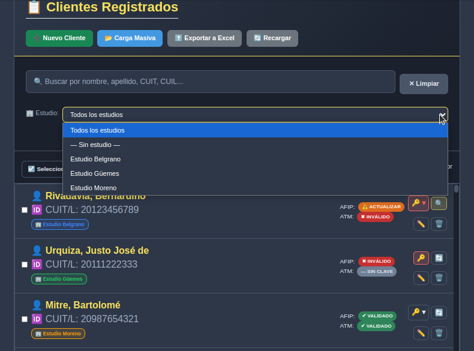
Crear, renombrar o eliminar estudios: en el formulario del cliente (al crearlo o al editarlo con ✏️), al lado de Estudio / Grupo: está el botón ⚙️. Abre la ventana 🏢 Estudios / Grupos:
- Para crear uno, escribí el nombre y hacé clic en ➕ Agregar. La aplicación le da un color sola.
- Para renombrarlo, cambiá el nombre en la lista y hacé clic en 💾.
- Para eliminarlo, hacé clic en 🗑️. Sus clientes no se borran: quedan "sin estudio".
No puede haber dos estudios con el mismo nombre. Para la aplicación, "Estudio Sur" y "estudio sur" son el mismo.
Ponerle un estudio a un cliente: elegilo en
Estudio / Grupo: dentro del formulario del cliente y
guardá. Si cargás clientes con la carga masiva,
poné el nombre del estudio en la columna estudio. Si ese estudio
todavía no existe, la aplicación lo crea sola.
Filtrar la lista
Debajo del buscador está 🏢 Estudio:. Podés elegir Todos los estudios, — Sin estudio — (los que no tienen ninguno) o un estudio en particular.
El filtro se suma al buscador. Si elegís un estudio y escribís "pérez", ves solo los Pérez de ese estudio.
Exportar a Excel (copia de seguridad)
El botón ⬆️ Exportar a Excel, arriba de la lista, baja tus clientes a una planilla. Te pregunta dónde guardarla. Al terminar, un aviso te dice cuántos clientes exportó y dónde quedó el archivo.
- Respeta el filtro de estudio. Con
Todos los estudios elegido, exporta a todos. Con un
estudio elegido, solo a ese, y el nombre del archivo lo dice (por
ejemplo
clientes_Estudio_Sur_2026-11-20.xlsx). El buscador no cuenta: aunque hayas escrito algo, exporta el estudio entero. - La planilla tiene dos hojas: Clientes (las mismas columnas de la carga masiva, más algunas de solo lectura en gris, como el estado de las claves) y PuntosDeVenta.
Volver a cargar ese Excel
Sirve para pasar los clientes a otra computadora, a una instalación nueva o a un compañero. Se carga por 📂 Carga Masiva, igual que en la sección 6: elegís el archivo exportado y hacés clic en Procesar Archivo.
- Un cliente que no estaba entra con sus claves, su estudio, el estado de sus claves y sus puntos de venta. Si ya estaba analizado, no hace falta volver a analizarlo (sección 7).
- Un cliente que ya estaba solo completa lo que tenía vacío, como en la sección 6. No se pisa nada.
9. Consulta de comprobantes emitidos
El problema: querés saber cuánto facturó un cliente en un período (por ejemplo, para la recategorización del monotributo) y en AFIP tenés que entrar a "Comprobantes en línea" y abrir factura por factura.
Este servicio lo hace solo: trae todos los comprobantes emitidos entre dos fechas, te da la cantidad y la suma total, y arma un Excel con el detalle. Solo consulta: no emite ni cambia nada en AFIP.
Paso a paso
- Abrí AFIP ▾ → Consulta Comprobantes (o escribí "comprobantes" en el buscador de inicio).
- En BUSCAR CLIENTES, elegí el cliente. Se elige uno solo por vez.
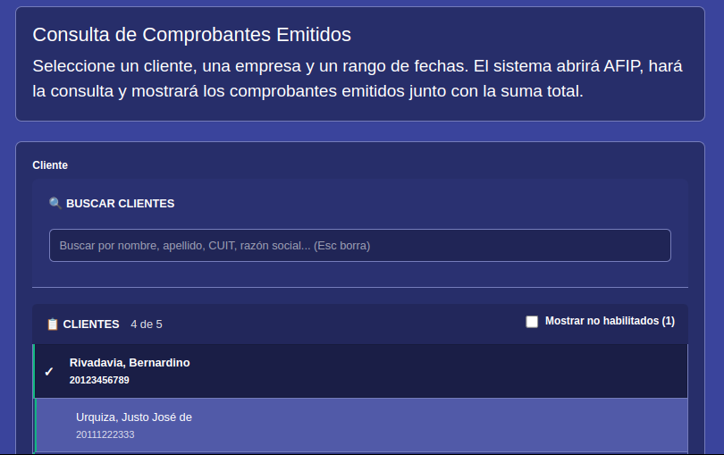
- Punto de venta (opcional): debajo dice cuántos tiene el cliente. Si no elegís ninguno, trae todos.
- Tipo de comprobante (opcional): por ejemplo, solo "Factura C". Si lo dejás en Todos los comprobantes (no filtrar), trae todos.
- Fecha desde y Fecha hasta. "Fecha hasta" ya viene con la fecha de hoy.
- Hacé clic en Consultar comprobantes.
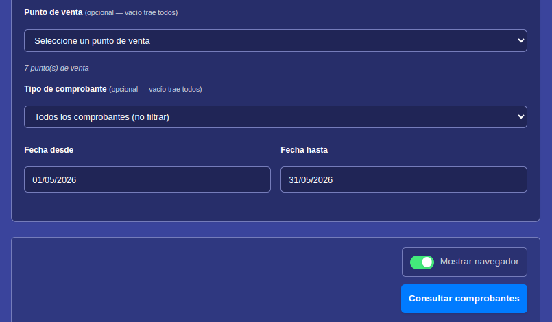
La aplicación entra a AFIP y abre el PDF de cada comprobante para sacar el detalle (neto, IVA, cliente). Por eso, con muchos comprobantes tarda: va de a uno.
El resultado
- Dos tarjetas: Comprobantes (la cantidad) y Suma total.
- El recuadro Excel generado, con Abrir archivo y 📁 Mostrar en la carpeta.
- Una tabla con cada comprobante: tipo, punto de venta, número, período, CUIT y razón social del comprador, y total.
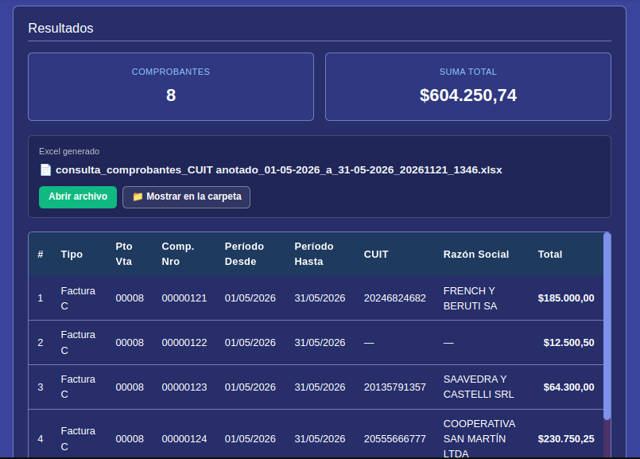
Si en el rango no hay nada, la tabla dice No se encontraron comprobantes en el rango. Si algo falla, aparece el motivo con ❌ (ver sección 13).
El Excel
Queda en Descargas\gestor_afip_atm\CUIT_Nombre\archivos_afip\, con
un nombre como
consulta_comprobantes_CUIT_01-05-2026_a_31-05-2026_….xlsx. Cada
consulta hace un archivo nuevo. Trae dos hojas:
- Comprobantes: una fila por comprobante, con fecha de emisión, comprador, importe neto gravado, cada alícuota de IVA, otros tributos y total.
- Descripciones: el detalle de lo facturado en cada comprobante.
10. ATM: Apremios
El problema: querés saber si un cliente tiene apremios (juicios de cobro) en ATM y cuánto debe. A mano hay que entrar a la Oficina Virtual y consultar impuesto por impuesto.
Este servicio lo hace solo, para uno o varios clientes, y arma un Excel por cliente. Solo consulta: no paga ni cambia nada en ATM. Necesita la clave ATM del cliente; no hace falta analizarlo.
Paso a paso
- Abrí ATM ▾ → Apremios (o, en la pantalla Servicios de ATM, el botón Apremios).
- Elegí los clientes en la lista. Pueden ser varios. (La pantalla de ATM también deja guardar listas de clientes y buscarlos por nombre, uno por línea, con Buscar y seleccionar.)
- Abajo aparece Impuestos a consultar por cliente: una fila
por cliente con casillas para Automotor,
Inmueble, Ingresos Brutos,
Multas y Agentes.
- Todos marca los cinco de ese cliente.
- La primera fila de la tabla marca o desmarca una columna para todos los clientes a la vez.
- Hacé clic en Procesar Apremios (dice entre paréntesis cuántos clientes van) y confirmá.
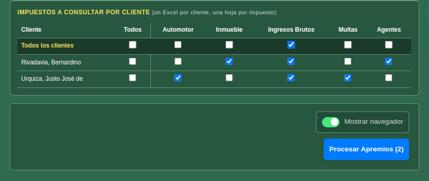
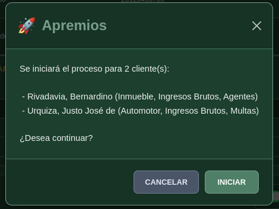
El resultado
Cada cliente pasa a Finalizados con una etiqueta y una línea por impuesto consultado, por ejemplo:
- "Ingresos Brutos: sin apremios"
- "Automotor: 2 apremio(s), 1 con saldo ($ …)" o "…, ninguno con saldo"
- "Inmueble: no se pudo consultar (…)"
La etiqueta dice Éxito si salieron todos, PARCIAL si algún impuesto falló (el Excel se guarda igual con los demás) o FALLO si no salió ninguno. Un impuesto que falla no corta a los otros. Debajo están los botones Abrir (el Excel) y 📁 Abrir carpeta del cliente.
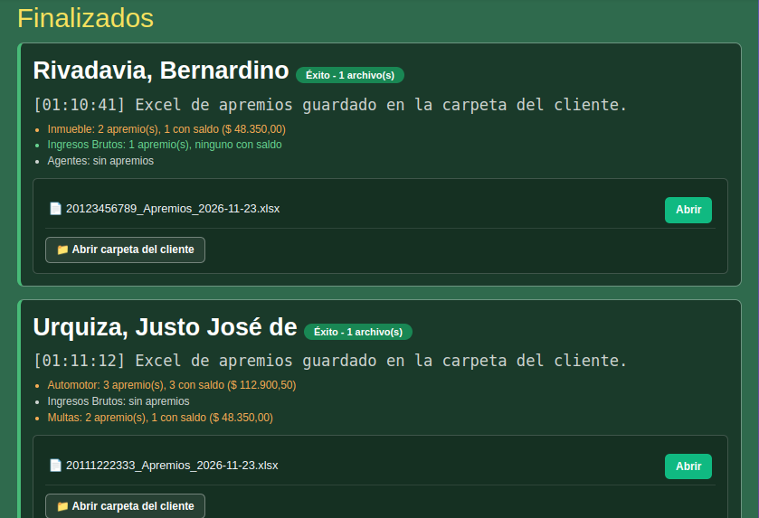
El Excel
Uno por cliente, en
Descargas\gestor_afip_atm\CUIT_Nombre\archivos_atm\Apremios\, con
el nombre CUIT_Apremios_AAAA-MM-DD.xlsx. Trae:
- La hoja Resumen: por impuesto, cuántos apremios hay, cuántos con saldo, el saldo adeudado y el estado.
- Una hoja por impuesto consultado, con el listado tal cual lo muestra ATM (boleta, juicio, juzgado, importes). Si no hay apremios, dice "Sin apremios"; si falló, el motivo.
11. PDF a Excel: resúmenes bancarios y formularios de AFIP/ATM
El problema: el banco te da el resumen de cuenta en PDF, y AFIP o ATM te dan en PDF la declaración jurada, la deuda o el plan de pago. Para trabajar esos números necesitás la tabla en Excel, y copiarla a mano lleva tiempo y se presta a errores.
Esta herramienta saca las tablas del PDF y arma un Excel con ellas. No pide claves ni entra a ninguna página: todo pasa en tu compu.
Qué PDF entiende
La aplicación mira el PDF y reconoce sola de qué tipo es. Cada tipo tiene la tabla armada a su manera, así que solo funciona bien con los que ya conoce:
- Resúmenes de cuenta de bancos. Por ejemplo: Nación, Galicia, Macro, Santander, BBVA, Credicoop y Supervielle. Saca la tabla de movimientos. Solo resúmenes de cuenta: otros PDF del banco (constancias, certificados) no.
- AFIP: la DDJJ de cargas sociales (F.931), la DDJJ de IVA (F.2002 y la nueva F.2051, "IVA Simple"), el detalle de deuda impaga, los detalles de planes de pago (cuotas, pagos e imputaciones) y la condonación de deudas.
- ATM: la constancia de situación fiscal (con su deuda) y el plan de pago.
Si el PDF no es de ninguno de estos, la aplicación prueba con un método general: a veces sale bien y a veces no. Un banco que no está en la lista puede no salir, porque cada banco arma su tabla distinto.
Un PDF (modo individual)
- Hacé clic en el botón PDF de la barra de arriba. Se abre Procesar PDF Individual.
- Hacé clic en Seleccionar PDF y elegí el archivo.
- Hacé clic en Procesar PDF.
- Si salió bien, aparece ¡PDF procesado exitosamente! y el recuadro Excel generado, con los botones Abrir archivo y 📁 Mostrar en la carpeta.
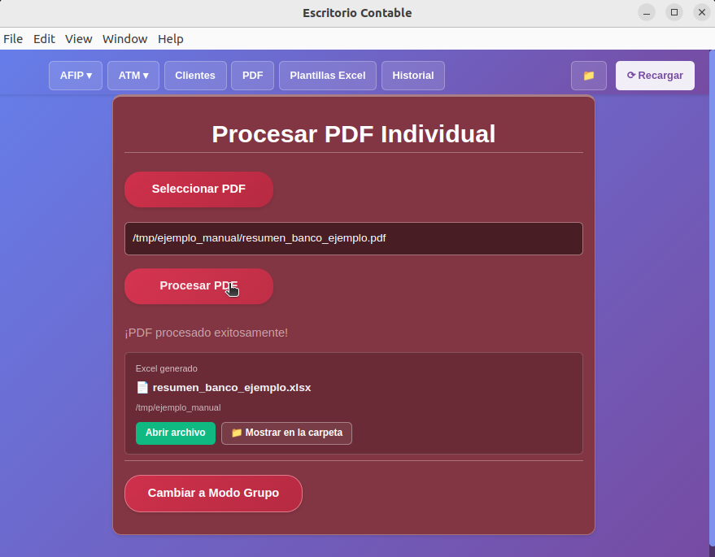
El Excel queda en la misma carpeta que el PDF. Algunos formularios salen con varias hojas, una por tabla.
Muchos PDF juntos (modo grupo)
- Poné todos los PDF en una carpeta.
- En la pantalla PDF, abajo, hacé clic en Cambiar a Modo Grupo. El título cambia a Procesar por Grupo.
- Hacé clic en Seleccionar Carpeta y elegí la carpeta.
- Hacé clic en Convertir.
- Al terminar aparece Procesamiento completado: X de Y archivos convertidos exitosamente y una línea por archivo con ✓ Éxito (y sus botones Abrir archivo y 📁 Carpeta) o ✗ Error con el motivo.
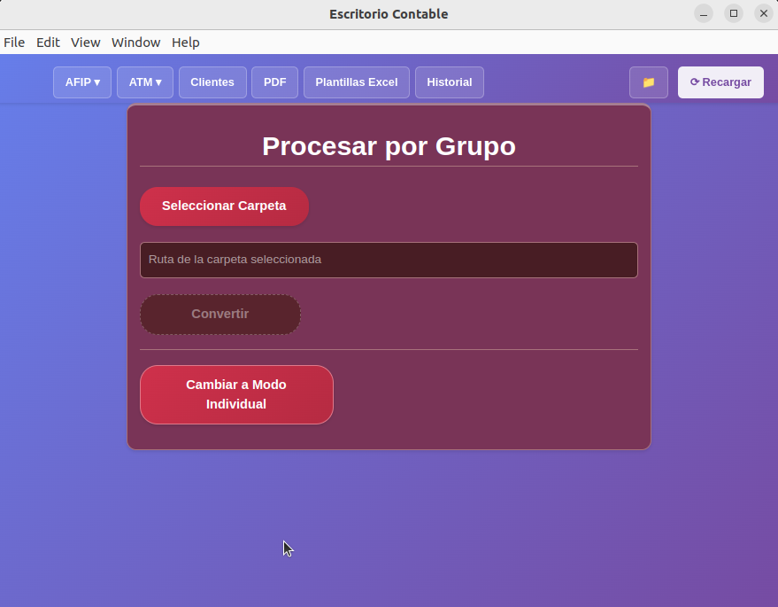
Cada Excel queda al lado de su PDF. Solo toma los PDF que están sueltos en esa carpeta, no los que están adentro de subcarpetas. Para volver, hacé clic en Cambiar a Modo Individual.
Antes de usar el Excel
12. Plantillas Excel
El problema: un cliente te manda todos los meses el mismo Excel, armado a su manera, y vos siempre le hacés el mismo trabajo a mano para sacar los totales. Una plantilla hace ese trabajo sola.
No pide claves ni entra a ninguna página: todo pasa en tu compu. Se abre con el botón Plantillas Excel de la barra de arriba.
Las plantillas que hay
🧾 Resumen de conceptos facturados. Toma la grilla de ítems facturados y arma un resumen de Neto e IVA por actividad y por tipo de comprobante.
- El Excel tiene que tener estas columnas: Año - mes, Comprobante, Conc./Art., Descripción, Neto Ítem e IVA Insc. Ítem.
- Agrega una hoja Resumen (una por mes si el archivo trae varios). Las celdas quedan con fórmulas: si cambiás un dato, el resumen se actualiza.
- Trae controles que tienen que dar diferencia 0. Si no dan 0, no genera nada: es señal de que algo del archivo no cierra.
- El archivo sale como "<original> - Resumen AAAA-MM.xlsx".
📅 Totales diarios. Toma las ventas del mes cargadas a mano (una columna por día, o pares FECHA | IMPORTE) y da el total de cada día.
- Sale como "<original> - procesado.xlsx", con la hoja Totales (FECHA | MONTO), la hoja Datos (lo original, con las celdas sospechosas marcadas) y, si hace falta, la hoja Avisos.
- Avisa los posibles errores de carga: un ticket mucho más grande que lo normal del mes (por ejemplo, un cero de más), un día con un total muy alto o muy bajo, o un día de lunes a sábado sin ventas.
- Si no puede saber con seguridad si las fechas son día/mes o mes/día, no genera nada.
Cómo se usa
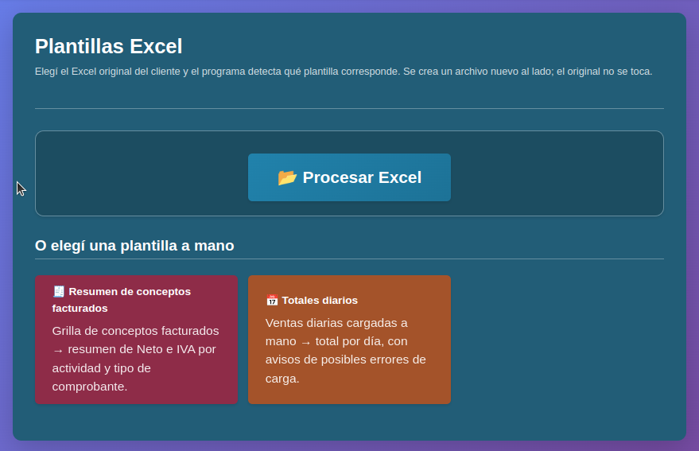
La forma más fácil es dejar que la aplicación elija:
- Hacé clic en 📂 Procesar Excel y elegí el Excel del cliente.
- La aplicación mira las columnas y busca qué plantilla le corresponde:
- Si sirve para una, la ejecuta directamente.
- Si sirve para varias, pregunta "¿Qué querés generar?" y elegís una.
- Si no sirve para ninguna, aparece "Ninguna plantilla reconoce este archivo" y te dice cuál se parece más.
Si ya sabés cuál querés, abajo dice "O elegí una plantilla a mano": hacé clic en el botón de la plantilla y elegí el archivo.
El resultado
Si salió bien, aparece "✅ <nombre de la plantilla>: listo" con:
- El recuadro Excel generado, con los botones Abrir archivo y 📁 Mostrar en la carpeta.
- La línea Controles, con lo que se verificó.
- La lista de avisos, cada uno con su nivel. En Totales diarios:
- Grave: un monto más de 10 veces mayor que el típico del mes, un día que vende más del triple de lo normal, o una celda que no se pudo leer y no se sumó.
- Revisar: un día con menos de un tercio de lo normal, o una duda con una fecha (por ejemplo, la misma fecha en dos columnas).
- Info: un día de lunes a sábado sin ventas, o una fórmula de suma, que no se cuenta como venta.
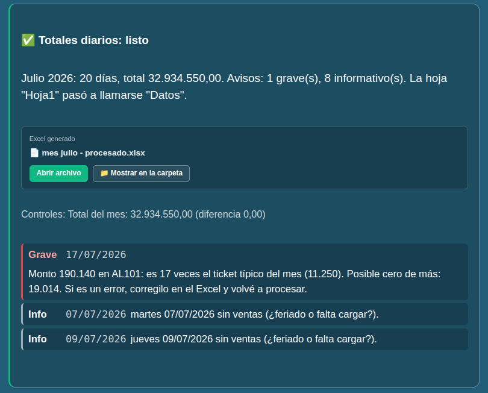
Si algo falla, aparece "❌ … no se generó el archivo" con el motivo. Los más comunes:
- El archivo es .xls (formato viejo de Excel). Solo se aceptan .xlsx.
- El archivo está dañado o tiene contraseña: abrilo en Excel, sacale la contraseña y guardalo de nuevo.
13. Problemas comunes
Lo que puede pasar al usar la aplicación, qué vas a ver y qué hacer.
"Parece que se colgó"
Mientras un servicio trabaja, abajo en el centro aparece un cartel con el cliente y lo que está haciendo, y la frase "No se colgó: está trabajando." Algunos pasos de AFIP o ATM tardan: esperá.
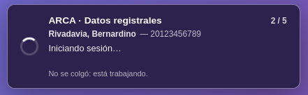
Si querés cortarlo, el botón que tocaste para arrancar pasa a decir Cancelar (en rojo). Al tocarlo, la aplicación cierra el navegador y el botón dice Cancelando… hasta que termina de frenar.
Cerré el navegador sin querer
Si cerrás la ventana del navegador mientras la aplicación trabaja, el resultado dice "Se cerró el navegador antes de terminar". No es una falla de AFIP ni de la clave: volvé a ejecutar el servicio.
AFIP pidió un captcha
A veces AFIP muestra un captcha al iniciar sesión. Qué pasa depende de Mostrar navegador:
- Prendido: la aplicación te espera hasta 3 minutos para que lo resuelvas a mano en la ventana del navegador, y después sigue sola.
- Apagado: no lo podés ver, así que corta y avisa: "AFIP pidió un captcha y el navegador está oculto. Reintentá con "Mostrar navegador" activado para resolverlo a mano. No indica que la clave sea inválida."
Cuando AFIP pide captcha, suele bloquear los ingresos desde tu conexión por unos 15 minutos. Por eso, en un trabajo con varios clientes, la aplicación saltea el resto y cada uno queda con "Salteado: AFIP pidió captcha (bloqueo temporal por IP, ~15 min). Reintentá este cliente más tarde."
Algo parecido pasa si AFIP tarda demasiado en contestar (el mensaje dice Timeout): es AFIP que está lenta, no tu clave. Probá más tarde.
Problemas con la clave
- Clave incorrecta. En AFIP aparece el mensaje de la misma página de AFIP; en ATM, "Clave ATM incorrecta". Pedile la clave al cliente y corregila (ver sección 4).
- AFIP pide cambiar la clave. Aparece "AFIP requiere que el cliente actualice su clave fiscal antes de operar." Entrá a AFIP a mano con ese CUIT, cambiá la clave, cargá la nueva en la aplicación y volvé a intentar.
- ATM pide cambiar la clave. La aplicación lo resuelve sola: la renueva poniendo la misma clave, así que no tenés que cambiar nada. Si no puede, aparece "ATM pidió cambiar la clave y no se pudo": entrá a ATM a mano y hacé el cambio vos.
No abre el navegador
La aplicación usa el Chrome o el Edge de la compu. Si no encuentra ninguno, aparece "Instala Google Chrome o Microsoft Edge para usar esta aplicación." Instalá uno de los dos y volvé a probar.
Si lo que no abre (o tarda) es la aplicación misma, mirá la sección 2.
Dónde ver qué pasó
- Historial (botón de la barra de arriba): abre Historial de acciones, una tabla con Fecha, Servicio, Estado, Cliente y Detalle. Se puede buscar por cliente, CUIT o resumen, y filtrar por servicio y por estado (Éxito, Error, Sin deuda, Parcial). Si no aparece lo último, tocá ⟳ Refrescar. No registra todo: Consulta de comprobantes, PDF a Excel y Plantillas Excel no quedan anotados. Y algunos servicios, como Apremios o Datos registrales, se ven en Todos los servicios pero no tienen opción propia en el filtro.
- 📄 Abrir logs (en el botón 📁 de la barra, ver
sección 2): el registro detallado de lo que hizo
la aplicación, un archivo por día. Se guardan los últimos 30 días. Las
claves aparecen tapadas con
***.
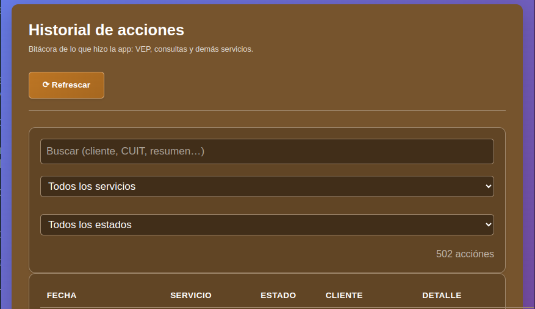